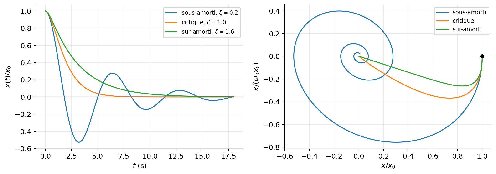
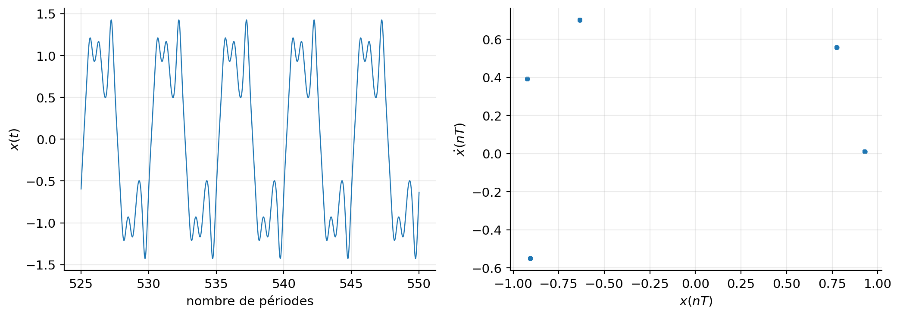

Du mouvement harmonique aux oscillations amorties, forcées, couplées et non linéaires
Un chapitre consacré aux oscillateurs en mécanique newtonienne, à leur résolution analytique et numérique, à leurs portraits de phase et à leurs résonances.
1 Un même mécanisme derrière des systèmes très différents
Une masse suspendue à un ressort, un pendule, une corde de guitare, les vibrations d’une molécule ou encore la charge d’un circuit électrique ne se ressemblent guère. Pourtant, dès qu’un système est légèrement écarté d’une position d’équilibre stable, il tend très souvent à y revenir, la dépasse sous l’effet de son inertie, puis recommence. Un oscillateur naît de la compétition entre une force de rappel et l’inertie.
Cette idée constitue le fil directeur du chapitre. Nous commencerons par montrer pourquoi l’oscillateur harmonique apparaît presque universellement au voisinage d’un équilibre stable. Nous verrons ensuite comment son mouvement est transformé par trois ingrédients physiques :
la dissipation, qui retire progressivement de l’énergie au système ;
une excitation extérieure, qui peut au contraire lui fournir de l’énergie et provoquer une résonance ;
la non-linéarité ou le couplage, qui font apparaître des phénomènes absents du modèle harmonique : dépendance de la période avec l’amplitude, modes normaux, instabilités et parfois chaos.
À la fin du chapitre, nous saurons :
construire l’équation différentielle d’un oscillateur à partir de la deuxième loi de Newton ;
résoudre les oscillateurs libre, amorti et forcé ;
interpréter le mouvement dans l’espace des phases et par des bilans d’énergie ;
distinguer pulsation propre, pulsation amortie et pulsation de résonance ;
diagonaliser un système de deux oscillateurs couplés ;
comprendre ce qui change lorsque le rappel n’est plus linéaire ;
résoudre numériquement ces équations en Python et contrôler la qualité de la solution.
NoteConventions et notations
Nous étudions d’abord un système à un degré de liberté, décrit par l’écart à l’équilibre \(x(t)\). Un point désigne une dérivée temporelle : \(dot x = \mathrm{d}x/\mathrm{d}t\) et \(\ddot x = \mathrm{d}^2x/\mathrm{d}t^2\).
Nous noterons :
\(m\) la masse ou, plus généralement, le coefficient d’inertie ;
\(k\) la raideur du rappel linéaire ;
\(b\) le coefficient de frottement visqueux, tel que \(F_f=-b\dot x\) ;
\(\omega_0=\sqrt{k/m}\) la pulsation propre non amortie ;
\(\gamma=b/(2m)\) le taux d’amortissement ;
\(\zeta=\gamma/\omega_0=b/(2\sqrt{km})\) le taux d’amortissement réduit.
La pulsation s’exprime en radians par seconde. La fréquence ordinaire vaut \(f=\omega/(2\pi)\) et la période \(T=2\pi/\omega\).
1.1 L’oscillateur harmonique comme approximation universelle
Considérons un mouvement conservatif à une dimension. La force dérive alors d’une énergie potentielle \(V(q)\) :
Une position \(q_e\) est une position d’équilibre lorsque la force s’y annule, donc lorsque
\[
V'(q_e)=0.
\]
Pour connaître la nature de cet équilibre, déplaçons légèrement le système et posons \(x=q-q_e\). Le développement de Taylor du potentiel autour de \(q_e\) donne
Le terme linéaire disparaît parce que \(V'(q_e)=0\). Si l’équilibre est stable, \(V\) possède localement un minimum et \(V''(q_e)>0\). Pour un déplacement suffisamment petit, les termes d’ordre trois et plus sont négligeables devant le terme quadratique. En posant
Ce raisonnement explique l’omniprésence de l’oscillateur harmonique : ce n’est pas le ressort qui est universel, mais la forme quadratique de tout potentiel régulier au voisinage d’un minimum non dégénéré.
Trois situations doivent immédiatement attirer l’attention :
l’amplitude est assez grande pour que les termes en \(x^3\), \(x^4\), etc. ne soient plus négligeables ;
\(V''(q_e)<0\) : l’équilibre est un maximum du potentiel et il est instable ;
\(V''(q_e)=0\) : le premier terme de rappel non nul est d’ordre supérieur et le mouvement n’est pas harmonique, même à très faible amplitude.
1.2 Solution, amplitude et phase
En divisant l’équation Equation 4 par \(m\) et en introduisant \(\omega_0=\sqrt{k/m}\), on obtient
\[
\ddot x+\omega_0^2x=0.
\tag{5}\]
Cherchons une solution exponentielle \(x(t)=e^{rt}\). Après substitution,
\[
(r^2+\omega_0^2)e^{rt}=0.
\]
Comme \(e^{rt}\) ne s’annule pas, l’équation caractéristique est \(r^2+\omega_0^2=0\), de racines \(r=\pm i\omega_0\). Une solution réelle s’écrit donc
\[
x(t)=A\cos(\omega_0t)+B\sin(\omega_0t).
\]
Les deux constantes sont déterminées par la position et la vitesse initiales. Si \(x(0)=x_0\) et \(\dot x(0)=v_0\), alors \(A=x_0\) et \(B=v_0/\omega_0\), d’où
La période \(T_0=2\pi/\omega_0=2\pi\sqrt{m/k}\) ne dépend pas de \(R\). Cette propriété, appelée isochronisme, est exacte pour l’oscillateur harmonique et seulement approchée pour la plupart des oscillateurs réels.
1.3 Énergie et portrait de phase
Multiplions l’équation \(m\ddot x+kx=0\) par \(\dot x\) :
L’énergie passe périodiquement de la forme potentielle à la forme cinétique, mais leur somme reste constante. Aux extrémités \(x=\pm R\), la vitesse est nulle et toute l’énergie est potentielle. Au passage par l’équilibre \(x=0\), la vitesse est maximale et toute l’énergie est cinétique.
En utilisant \(E=kR^2/2\) et \(k=m\omega_0^2\), l’équation de conservation devient
Dans le plan de phase \((x,\dot x)\), chaque trajectoire est donc une ellipse fermée. Le sens de parcours est horaire : au point \((R,0)\), l’accélération est négative et la vitesse devient immédiatement négative.
NoteRepère historique
La loi de Hooke, publiée en 1678 sous la formule latine ut tensio, sic vis (« telle extension, telle force »), fournit le prototype du rappel linéaire. Mais la théorie des oscillations dépasse largement les ressorts : les travaux de Galilée puis de Huygens sur le pendule ont notamment placé l’isochronisme et la mesure du temps au cœur de la mécanique moderne.
1.4 Résolution numérique et contrôle de l’énergie
Une équation d’ordre deux est transformée en deux équations d’ordre un en introduisant \(v=\dot x\) :
Cette écriture est celle attendue par la plupart des intégrateurs numériques. Le code suivant définit une fonction générale qui sera réutilisée dans tout le chapitre.
Figure 1: Oscillateur harmonique : position, portrait de phase et contrôle de l’énergie.
Une courbe lisse ne suffit pas à valider un calcul. Ici, trois tests indépendants sont disponibles : la superposition à la solution exacte, la fermeture du portrait de phase et la conservation de \(E\). Cette habitude devient essentielle dès que l’équation n’admet plus de solution analytique.
2 Dissipation, forçage et résonance
L’oscillateur harmonique idéal conserve indéfiniment son énergie. Un système réel échange cependant de l’énergie avec son environnement. À faible vitesse, de nombreux mécanismes dissipatifs peuvent être modélisés au premier ordre par une force visqueuse \(-b\dot x\). Une action extérieure périodique peut simultanément restituer de l’énergie au système. Le modèle linéaire le plus général étudié ici est alors
L’exponentielle ne modifie pas seulement la hauteur des maxima : elle traduit une perte d’énergie. En effet, en multipliant \(m\ddot x+b\dot x+kx=0\) par \(\dot x\), on trouve
ImportantLe régime critique n’est pas celui qui dissipe le plus
Le régime critique est celui qui ramène le système à l’équilibre le plus rapidement sans dépassement. Augmenter encore \(b\) rend le mouvement sur-amorti : l’inertie est alors si fortement freinée que le retour devient plus lent.
Afficher le code Python
m, k =1.0, 1.0omega0 = np.sqrt(k / m)temps = np.linspace(0, 18, 2500)regimes = [(0.20, "sous-amorti"), (1.00, "critique"), (1.60, "sur-amorti")]couleurs = ["tab:blue", "tab:orange", "tab:green"]fig, axes = plt.subplots(1, 2, figsize=(11, 4.0))for (zeta, nom), couleur inzip(regimes, couleurs): b =2* zeta * np.sqrt(k * m)def acceleration_amortie(t, x, v, m, k, b):return-(b * v + k * x) / m x, v = resoudre_oscillateur( acceleration_amortie, (1.0, 0.0), temps, args=(m, k, b) ) axes[0].plot(temps, x, color=couleur, label=rf"{nom}, $\zeta={zeta:.1f}$") axes[1].plot(x, v, color=couleur, label=nom)axes[0].axhline(0, color="black", lw=0.8)axes[0].set(xlabel=r"$t$(s)", ylabel=r"$x(t)/x_0$")axes[0].legend(fontsize=9)axes[1].scatter([1], [0], color="black", s=30, zorder=3)axes[1].set(xlabel=r"$x/x_0$", ylabel=r"$\dot x/(\omega_0x_0)$")axes[1].legend(fontsize=9)plt.tight_layout()plt.show()

Figure 2: Les trois régimes d’un oscillateur libre amorti et leurs portraits de phase.
Dans l’espace des phases, l’ellipse de l’oscillateur conservatif devient une spirale dans le régime sous-amorti. Pour les régimes critique et sur-amorti, la trajectoire rejoint l’origine sans tourner autour d’elle. L’origine est désormais un attracteur.
2.2 Réponse à une excitation sinusoïdale
Revenons à l’équation complète Equation 11. Sa solution est la somme de deux termes :
Le régime transitoire satisfait l’équation libre amortie et disparaît comme \(e^{-\gamma t}\). Après un temps suffisamment long, seule subsiste la réponse permanente, à la pulsation \(\Omega\) imposée par la source.
Pour la calculer proprement, écrivons la force comme la partie réelle de \(F_0e^{i\Omega t}\) et cherchons une réponse complexe \(\widetilde x=Xe^{i\Omega t}\). Ses dérivées valent
L’emploi de \(\operatorname{atan2}\), plutôt que d’une simple tangente inverse, place correctement \(\delta\) entre \(0\) et \(\pi\). À basse fréquence, le mouvement suit presque la force, \(\delta\simeq0\). À haute fréquence, l’inertie domine et la réponse est presque en opposition de phase, \(\delta\simeq\pi\). Pour \(\Omega=\omega_0\), le déphasage vaut exactement \(\pi/2\).
En posant \(r=\Omega/\omega_0\) et en normalisant l’amplitude par le déplacement statique \(F_0/k\), la réponse prend la forme universelle
La pulsation qui maximise l’amplitude de déplacement est obtenue en minimisant le carré du dénominateur. En dérivant par rapport à \(\Omega\), on trouve, pour \(\zeta<1/\sqrt2\),
Ainsi, \(\Omega_r\), \(\omega_d\) et \(\omega_0\) sont trois pulsations différentes. Elles deviennent proches uniquement lorsque l’amortissement est faible.
Figure 3: Amplitude et déphasage de la réponse forcée pour plusieurs amortissements.
2.3 Puissance absorbée et facteur de qualité
En régime permanent, l’énergie mécanique moyenne ne varie plus : la puissance moyenne fournie par l’excitation compense exactement la puissance dissipée. Avec \(x=A\cos(\Omega t-\delta)\),
mesure à la fois l’acuité de la résonance et le nombre d’oscillations nécessaires pour dissiper une part importante de l’énergie. Dans l’approximation \(Q\gg1\), la largeur à mi-puissance vérifie \(\Delta\Omega\simeq\omega_0/Q\).
NoteRésonance sans amortissement et battements
Si \(b=0\) et \(\Omega\neq\omega_0\), une solution partant de \(x(0)=\dot x(0)=0\) est
Lorsque \(\Omega\) est proche de \(\omega_0\), l’identité trigonométrique sur la différence de deux cosinus fait apparaître une oscillation rapide modulée par une enveloppe lente : ce sont les battements. À la résonance exacte, la limite donne
L’amplitude croît linéairement parce que la source apporte de l’énergie dans la bonne phase à chaque cycle. Dans un système réel, l’amortissement ou les non-linéarités finissent toujours par limiter cette croissance.
3 Plusieurs degrés de liberté et excitation paramétrique
Jusqu’ici, une seule coordonnée suffisait pour décrire le système. Dès que plusieurs parties peuvent se déplacer indépendamment, une impulsion locale se propage et l’énergie peut circuler d’un degré de liberté à l’autre. Le mouvement apparemment complexe se simplifie toutefois lorsqu’on identifie les modes normaux.
3.1 Deux oscillateurs couplés
Considérons deux masses identiques \(m\). Chacune est reliée à un support fixe par un ressort de raideur \(k\), et les deux masses sont reliées entre elles par un ressort de raideur \(\kappa\). Les déplacements \(x_1\) et \(x_2\) sont mesurés à partir de l’équilibre.
Sur la première masse, le ressort extérieur exerce \(-kx_1\) et le ressort de couplage exerce \(\kappa(x_2-x_1)\). De même, la force de couplage sur la seconde masse vaut \(\kappa(x_1-x_2)\). Les équations de Newton sont donc
pour le mode antisymétrique. Dans le premier mode, les deux masses se déplacent ensemble : le ressort central ne s’allonge pas et n’affecte donc pas \(\omega_+\). Dans le second, elles se déplacent en sens opposés et le ressort central est fortement sollicité, ce qui explique \(\omega_->\omega_+\).
Le mouvement général n’est donc pas une nouvelle dynamique mystérieuse : c’est une superposition de deux oscillateurs harmoniques indépendants, mais exprimés dans les bonnes coordonnées.
Figure 4: Échange d’amplitude entre deux oscillateurs couplés et décomposition en modes normaux.
Lorsque \(\kappa\ll k\), les deux pulsations sont proches. Les interférences entre les deux modes produisent alors une lente modulation : l’amplitude semble passer alternativement d’une masse à l’autre. Il ne s’agit pas d’une perte d’énergie, mais d’un transfert périodique entre les deux sous-systèmes.
Pour \(N\) degrés de liberté linéaires, la même méthode conduit au problème généralisé
Les modes normaux sont les briques élémentaires des vibrations moléculaires, des structures mécaniques et, dans la limite continue, des ondes.
3.2 Oscillateur paramétrique
Une force extérieure n’est pas la seule manière d’injecter de l’énergie. On peut aussi modifier périodiquement un paramètre du système. Si la raideur varie selon
\[
k(t)=k_0\left[1+h\cos(\Omega t)\right],
\]
alors le mouvement obéit à
\[
\ddot x+2\gamma\dot x
+\omega_0^2\left[1+h\cos(\Omega t)\right]x=0.
\tag{32}\]
Cette équation appartient à la famille des équations de Mathieu. Contrairement au forçage additif de Equation 11, l’excitation multiplie ici \(x\). La solution \(x=0\) reste donc une solution exacte, mais elle peut devenir instable : une perturbation arbitrairement petite est alors amplifiée.
L’instabilité principale apparaît près de
\[
\Omega\simeq2\omega_0.
\tag{33}\]
L’exemple familier est celui d’une balançoire : en déplaçant périodiquement son centre de masse deux fois par période, on augmente l’amplitude sans appliquer directement une force sinusoïdale horizontale. Pour \(h\ll1\) et exactement \(\Omega=2\omega_0\), l’amplitude croît approximativement comme
Figure 5: Stabilité et instabilité paramétrique près de \(\Omega=2\omega_0\).
ImportantForçage ordinaire ou paramétrique ?
Dans un forçage ordinaire, une force \(F(t)\) agit même lorsque \(x=0\) et la résonance principale se situe près de \(\Omega=\omega_0\). Dans une excitation paramétrique, c’est un coefficient de l’équation qui varie ; l’instabilité principale se situe près de \(\Omega=2\omega_0\).
4 Oscillateurs non linéaires : du pendule au chaos
Le modèle linéaire possède deux propriétés très particulières : les solutions peuvent être superposées et leur fréquence ne dépend pas de leur amplitude. Ces deux propriétés disparaissent dès que la force de rappel n’est plus proportionnelle au déplacement.
4.1 Le pendule simple au-delà des petits angles
Considérons une masse ponctuelle \(m\) au bout d’un fil rigide sans masse de longueur \(\ell\). Le moment du poids par rapport au point d’attache vaut \(-mg\ell\sin\theta\), tandis que le moment d’inertie vaut \(I=m\ell^2\). L’équation de rotation \(I\ddot\theta=\mathcal M\) donne
L’approximation ne consiste donc pas à dire que \(\sin\theta=\theta\) exactement : elle consiste à négliger une correction relative d’ordre \(\theta^2\). À \(10^\circ\), cette correction reste faible ; à \(90^\circ\), elle ne l’est plus du tout.
En multipliant Equation 35 par \(m\ell^2\dot\theta\), on obtient l’énergie conservée
La période augmente donc avec l’amplitude et diverge lorsque \(\theta_{\max}\to\pi\) : au voisinage du sommet, la force tangentielle devient très faible et le pendule y passe un temps arbitrairement long.
Figure 6: Écart entre le pendule exact et l’approximation harmonique lorsque l’amplitude augmente.
Les pointillés représentent l’approximation harmonique. Ils restent presque confondus avec la solution exacte à faible amplitude, puis accumulent un déphasage de plus en plus visible. Le portrait de phase cesse simultanément d’être elliptique.
4.2 L’oscillateur de Duffing
Le premier correctif non linéaire compatible avec une symétrie \(x\mapsto-x\) est souvent cubique. L’équation de Duffing s’écrit
Sans dissipation ni forçage, le potentiel correspondant est
\[
V(x)=\frac12kx^2+\frac14\alpha x^4.
\tag{41}\]
Si \(\alpha>0\), le rappel devient plus raide lorsque l’amplitude augmente : on parle de durcissement et la fréquence augmente avec l’amplitude.
Si \(\alpha<0\), le rappel s’assouplit localement. Un modèle physique global doit alors généralement contenir des termes d’ordre supérieur pour que le potentiel reste borné inférieurement.
Avec \(k<0\) et \(\alpha>0\), le potentiel possède deux puits séparés par un équilibre instable : c’est le modèle bistable de Duffing.
Le principe de superposition ne s’applique plus. Sous forçage périodique, la courbe de résonance peut se pencher, plusieurs réponses stables peuvent coexister, et un balayage lent de \(\Omega\) peut produire une hystérésis. Pour certaines valeurs des paramètres, le mouvement devient chaotique.
Le chaos ne signifie pas que l’équation contient du hasard. Il signifie qu’une dynamique déterministe possède une sensibilité exponentielle aux conditions initiales. Pour l’identifier, une simple courbe \(x(t)\) est souvent insuffisante. On observe plutôt une section de Poincaré, obtenue en échantillonnant \((x,\dot x)\) une fois par période du forçage.
Afficher le code Python
# Équation adimensionnée : x'' + delta*x' - x + x^3 = f*cos(Omega*t)delta, f, Omega =0.20, 0.30, 1.20periode =2* np.pi / Omegan_periodes =550points_par_periode =90temps = np.linspace(0, n_periodes * periode, n_periodes * points_par_periode +1)def acceleration_duffing(t, x, v, delta, f, Omega):return-delta * v + x - x**3+ f * np.cos(Omega * t)x, v = resoudre_oscillateur( acceleration_duffing, (0.1, 0.0), temps, args=(delta, f, Omega))# On élimine le transitoire et on prélève un point par période.indices_poincare = np.arange(150, n_periodes +1) * points_par_periodemasque_fin = temps > (n_periodes -25) * periodefig, axes = plt.subplots(1, 2, figsize=(11, 4.0))axes[0].plot(temps[masque_fin] / periode, x[masque_fin], lw=0.9)axes[0].set(xlabel="nombre de périodes", ylabel=r"$x(t)$")axes[1].scatter(x[indices_poincare], v[indices_poincare], s=9, alpha=0.65)axes[1].set(xlabel=r"$x(nT)$", ylabel=r"$\dot x(nT)$")plt.tight_layout()plt.show()

Figure 7: Oscillateur de Duffing bistable : signal tardif et section de Poincaré dans un régime chaotique.
NotePrudence numérique : un nuage de points n’est pas une preuve de chaos
Une section de Poincaré diffuse constitue un indice, mais un pas de temps trop grand peut lui aussi créer une dynamique artificiellement irrégulière. Il faut vérifier la convergence lorsque le pas ou les tolérances changent, éliminer un transitoire suffisamment long et, pour une étude quantitative, calculer au moins un exposant de Lyapunov.
4.3 Une classification énergétique
Les exemples précédents peuvent être réunis dans une même équation :
Cette relation permet de lire immédiatement le rôle de chaque terme :
Terme
Effet physique
Signature dans le portrait de phase
inertie \(m\ddot x\)
permet le dépassement de l’équilibre
transforme le problème en dynamique d’ordre deux
potentiel \(V(x)\)
organise équilibres et forces de rappel
fixe les courbes d’énergie du système conservatif
dissipation \(b\dot x\)
retire de l’énergie
contraction des trajectoires vers un attracteur
forçage \(F_{\mathrm{ext}}\)
injecte ou retire de l’énergie selon la phase
cycle limite, réponse quasi-périodique ou chaos
dépendance non linéaire
couple amplitude et fréquence
portraits non elliptiques, séparatrices, bifurcations
5 Construire une bonne simulation numérique
La résolution numérique n’est pas une boîte noire ajoutée après la physique. Elle commence par le choix des variables d’état, des échelles et des diagnostics.
5.1 Mise sous forme d’un système du premier ordre
Pour l’équation générale Equation 42, posons \(v=\dot x\). Le système à intégrer est
Cette écriture rend explicite l’état instantané \((x,v)\). Elle convient aussi bien à solve_ivp qu’à une implémentation de Runge–Kutta d’ordre quatre.
5.2 Adimensionner avant de calculer
Pour un oscillateur forcé linéaire, choisissons \(\tau=\omega_0t\) et une longueur caractéristique \(x_s=F_0/k\). En posant \(X=x/x_s\), l’équation devient
où les primes désignent maintenant les dérivées par rapport à \(\tau\). Cinq paramètres dimensionnés ont été ramenés à deux nombres sans dimension, \(\zeta\) et \(r\). L’adimensionnement améliore l’interprétation, facilite les comparaisons et évite souvent des échelles numériques extrêmes.
5.3 Choisir et tester l’intégrateur
Pour les figures statiques de ce chapitre, solve_ivp avec la méthode explicite DOP853 offre une grande précision. Ce choix n’est cependant pas universel.
Pour une dynamique dissipative ordinaire, les méthodes adaptatives de Runge–Kutta sont efficaces.
Pour un problème raide, il faut envisager Radau ou BDF.
Pour une dynamique hamiltonienne suivie sur un temps très long, un intégrateur symplectique, tel que Verlet, respecte généralement mieux la géométrie du flot et limite la dérive séculaire de l’énergie.
Pour une animation dans le navigateur, un RK4 à petit pas fixe offre un bon compromis entre simplicité, régularité et précision visuelle.
Le code suivant donne une version compacte de l’algorithme de Verlet-vitesse pour une force conservative \(F(x)\).
Afficher l’intégrateur de Verlet-vitesse
def verlet_vitesse(force, x0, v0, temps, m=1.0):"""Intégration symplectique de m*x'' = force(x), sur une grille uniforme.""" temps = np.asarray(temps) dt = temps[1] - temps[0]ifnot np.allclose(np.diff(temps), dt):raiseValueError("La grille temporelle doit être uniforme.") x = np.empty_like(temps, dtype=float) v = np.empty_like(temps, dtype=float) x[0], v[0] = x0, v0 a = force(x[0]) / mfor n inrange(len(temps) -1): x[n +1] = x[n] + v[n] * dt +0.5* a * dt**2 a_suivante = force(x[n +1]) / m v[n +1] = v[n] +0.5* (a + a_suivante) * dt a = a_suivantereturn x, v
ImportantListe minimale de contrôles
Avant d’interpréter une simulation, vérifiez systématiquement :
les dimensions et les signes de l’équation ;
un cas limite connu, par exemple \(b=F_0=0\) ;
la convergence lorsque les tolérances ou le pas sont resserrés ;
la conservation de l’énergie si le système est conservatif ;
l’indépendance des résultats tardifs vis-à-vis de la durée du transitoire supprimé.
6 Simulations interactifs
6.1 Simulation — Pendule non linéaire
Cette simulation compare en temps réel l’équation exacte
à son approximation linéaire \(\sin\theta\simeq\theta\). Le portrait de phase est représenté sur le cylindre \(\theta\equiv\theta+2\pi\) ; les séparatrices conservatives sont indiquées en pointillés.
Pendule exact et approximation harmonique
Comparaison synchronisée des deux modèles
Petits angles
Période non linéaire
État initial conservatif
Énergie réduite actuelle
Mouvement du pendule
modèle exactpetits angles
Angle au cours du temps
θ exactθ linéaire
Portrait de phase cylindrique
trajectoireséparatrices
Essayez d'abord θ0=10°, puis 90° et 170°. Ajoutez ensuite une vitesse initiale suffisante pour franchir l'énergie réduite ε=2 et obtenir une rotation.
NoteLecture guidée des deux simulations
Quelques expériences numériques simples permettent de relier directement les simulations aux résultats du cours.
Isochronisme harmonique. Imposez \(b=F_0=0\) et changez \(x_0\). La période reste fixée par \(m\) et \(k\), tandis que les ellipses de phase changent de taille.
Transition critique. Gardez \(m\) et \(k\) fixes, imposez \(F_0=0\), puis faites varier \(b\) autour de \(b_c=2\sqrt{km}\). Le portrait passe d’une spirale à une approche directe de l’origine.
Résonance. Choisissez un faible \(b\), démarrez depuis \(x_0=v_0=0\), puis rapprochez \(\Omega\) de \(\omega_0\). L’amplitude permanente augmente et le transitoire reste visible au début.
Perte de l’isochronisme. Dans la simulation du pendule, comparez \(10^\circ\) et \(150^\circ\). Le modèle linéaire conserve \(T_0\), tandis que le pendule exact ralentit fortement à grande amplitude.
Séparatrice. Avec \(\gamma=0\), augmentez \(\dot\theta_0\) jusqu’à ce que l’énergie réduite dépasse \(2\). Le portrait de phase passe d’une boucle fermée à une trajectoire de rotation.
6.2 Simulation — Ressort amorti et forcé
Cette simulation intègre l’équation
\[
m\ddot x+b\dot x+kx=F_0\cos(\Omega t)
\]
sans supposer que le régime transitoire a disparu. Il permet donc d’observer simultanément le mouvement mécanique, la position au cours du temps et le portrait de phase. Pour isoler un phénomène, on peut fixer \(F_0=0\) ou \(b=0\).
Oscillateur linéaire
Intégration RK4 dans le navigateur
Pulsation propre
Amortissement
Régime libre
Énergie mécanique
Vue mécanique
Position au cours du temps
position x(t)
Portrait de phase
trajectoire (x, v)
Astuce : placez F0=0 pour comparer les trois régimes libres. Avec un faible frottement, réglez ensuite Ω près de ω0 pour faire apparaître la résonance.
7 Conclusion
Le terme « oscillateur » ne désigne pas une équation unique, mais une famille de dynamiques organisée autour de quelques mécanismes simples.
fréquence dépendante de l’amplitude, séparatrices et chaos
Le résultat le plus général est aussi le plus simple : près d’un minimum régulier du potentiel, les petits mouvements sont harmoniques. Le reste du chapitre décrit précisément comment le système s’éloigne de ce comportement universel lorsque l’amplitude, les pertes, le forçage ou le nombre de degrés de liberté augmentent.
ImportantÀ retenir
Pour analyser un nouvel oscillateur, il faut suivre quatre étapes : identifier les équilibres et leur stabilité, linéariser si l’amplitude le permet, établir le bilan d’énergie, puis étudier le flot dans l’espace des phases. La résolution analytique ou numérique vient ensuite ; elle ne remplace jamais cette lecture physique préalable.